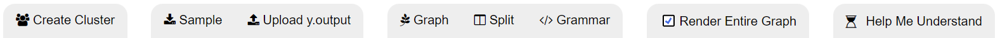
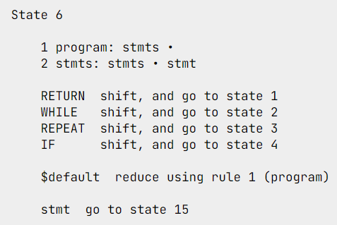
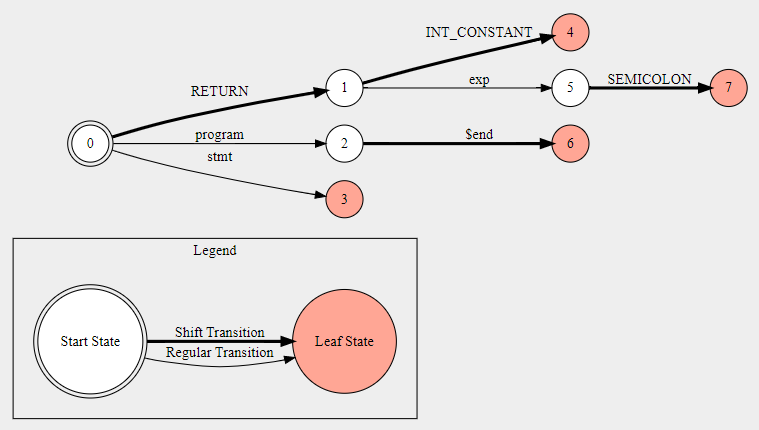
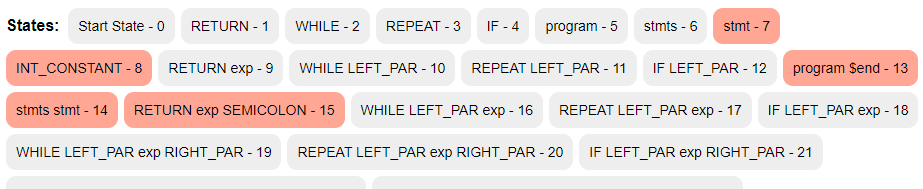
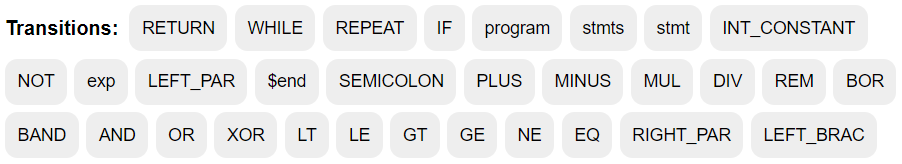

Visualizing Finite Automaton of Syntax Analysis
Understand This Visualization
What is a compiler?
To completely understand this visualization, we must learn a little about the compiler. A compiler is a special program that translates a programming language's source code into machine code, bytecode, or another programming language. The source code is typically written in a high-level, human-readable language such as Java or C++. A programmer writes the source code in a code editor or an integrated development environment (IDE) that includes an editor, saving the source code to one or more text files. A compiler that supports the source programming language reads the files, analyzes the code, and translates it into a format suitable for the target platform.
How does the compiler work?
In this section, we will only explore the workings of the compiler that would suffice in understanding of the visualization. After a programmer writes the code, the code needs to be tokenized in preparation for syntax and semantic analysis. Parallel to the English language, we can turn individual items in a token using pattern matching.
Next, in the Syntax analysis, the compiler verifies that the code's syntax is correct based on the rules for the source language. During this step, the compiler typically creates abstract syntax trees (AST) that represent the logical structures of specific code elements. To represent AST, you need context-free grammar (CFG) and CFG can be converted into a push-down automaton, which we have as a graph.
Limitations
In the push-down automaton, you can see that there are three types of transitions: Regular, Shift, and reduce. Shift transition exists to push an item on the stack and reduce transition exists to consume an item from the stack. The idea of shift transition is to push for example integer value 1 on the stack and when another state applies the reduce rule that integer value 1 can be consumed from the stack. In this visualization, we are recreating a stack machine that does this action. Rather in this visualization, the three transitions have been differentiated using visual encodings.
Understanding the buttons at the top
You can also create clusters by specifying what token you want to cluster together. Clicking on the download sample y.output will download a different sample file each time you click it. When checked the entire graph will be displayed when interacting with the buttons and transitions at the bottom. When unchecked, the transition buttons will not recreate the graph, and it will create a graph with their outgoing transitions when a state is selected. Clicking on graph, split or grammar will put their respective element in full screen. The checkbox for rendering the entire graph allows you to either render the entire graph or not. You can also upload you own y.output file so that you may explore the output of syntax analysis from your own compiler.
Understanding the grammar
Here we are looking at state 6 from a y.output file. The compiler can be programmed to look ahead and see if it can find certain tokens. When you see elements after the bullet point, those are the future tokens they can potentially accept. That's the first block of the code. Now the second block of the code is about shift transition. If any of those four tokens are read while at state 6 then it will take the shift transition. Meaning the compiler will push that token on the top of the stack machine and move to the corresponding state. Next with the third block, you can reduce using a particular rule. When you reduce using a certain rule, it needs to match what is on top of the stack. If you have a stmts token on top of the stack you can pop it by reading a rule for the program. At last, the fourth block is a regular transition that allows you to move to the next state. In an instance where none of the three types of transition match, then you have encountered an error. Meaning the code you have provided failed syntax analysis and that your code is not valid. This syntax analysis would fail if you tried to give it the following code: "RETURN INT_CONSTANT" because the compiler expects a semicolon at the end.
Understanding the graph
A state with a double circle is a start state and that's the origin of the code. As the name suggests from the image, the thinner transition arrow represents regular transitions, while the thicker one represents shift transitions. The state with red color is considered a leaf state, and they are always accompanied by a reduce rule. The state with white colors are rules that have other types of transitions available to them, whether that be regular, shift or both types of transitions. When you hover over the state, you will see a tooltip with the current state or if it's a leaf state then you will see the default rule that it uses to reduce on the stack. When you hover over the transition name or the arrow, you will see the origin and destination state as a tooltip.
Understanding the state amd transition buttons at the bottom
After a y.output file is parsed, the grammar will extract all potential states that the compiler can be in. These states are numbers starting from 0 to n number of states. They are presented as buttons so that you can highlight and jump to the section of the code for that specific state while also highlighting the state in the graph view.
For transition, we do something similar and find out all the terminal and non-terminal tokens that can be used to move to the next state. All those unique transitions are then presented to select from. When you click on one of the transitions, the code highlights any state with that transition and jumps to the first instance of that transition in the code view. If the render entire graph checkbox is selected then, the graph will also highlight that transition in the graph with a unique color with a bold line. Something to note is that you can only select one state or one transition at a time. If no state or transitions are selected then in the code view no section of the code will be highlighted and if the render checkbox is selected then the graph will be created without any special state or transition highlighting.
Credits
This project was a joint effort by Nikith Rachakonda, Sravan Pattabhi, and Akash Magnadia (Project Manager) as part of the Visual Data Science class at the University of Illinois at Chicago under the supervision of professor Marai and Graduate TA Carla Floricel. We would like to thank our client Professor Luís Gabriel Ganchinho de Pina for providing domain expertise to help represent the content of this visualization as accurately as possible. External Sources: Font for the code, Icons, D3 js, Graph Viz, HTML License, CSS License, Javascript License,